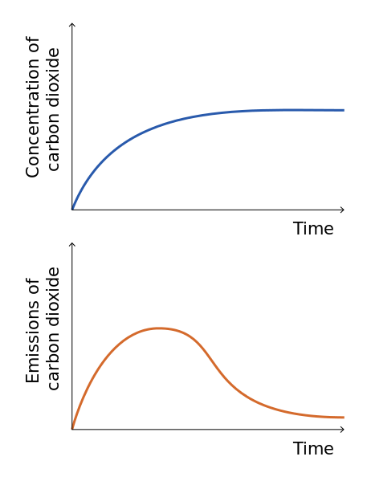
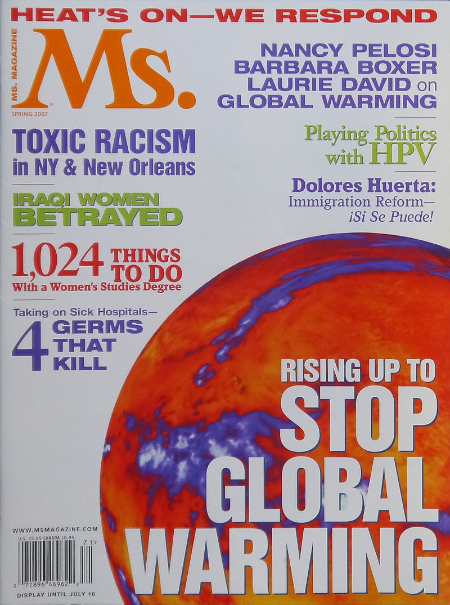

Most countries in the world are parties to the United Nations Framework Convention on Climate Change (UNFCCC). The ultimate objective of the Convention is to prevent dangerous human interference of the climate system. As stated in the Convention, this requires that greenhouse gas concentrations are stabilized in the atmosphere at a level where ecosystems can adapt naturally to climate change, food production is not threatened, and economic development can proceed in a sustainable fashion. The Framework Convention was agreed on in 1992, but global emissions have risen since then.
 During negotiations, the G77 (a lobbying group in the United Nations representing 133 developing countries) pushed for a mandate requiring developed countries to "take the lead" in reducing their emissions. This was justified on the basis that the developed countries' emissions had contributed most to the cumulation of greenhouse gases in the atmosphere, per-capita emissions (i.e., emissions per head of population) were still relatively low in developing countries, and the emissions of developing countries would grow to meet their development needs.
This mandate was sustained in the Kyoto Protocol to the Framework Convention, which entered into legal effect in 2005.In ratifying the Kyoto Protocol, most developed countries accepted legally binding commitments to limit their emissions. These first-round commitments expired in 2012. United States President George W. Bush rejected the treaty on the basis that "it exempts 80% of the world, including major population centres such as China and India, from compliance, and would cause serious harm to the US economy".
At the 15th UNFCCC Conference of the Parties, held in 2009 at Copenhagen, several UNFCCC Parties produced the Copenhagen Accord. Parties associated with the Accord (140 countries, as of November 2010) aim to limit the future increase in global mean temperature to below 2 °C. The 16th Conference of the Parties (COP16) was held at Cancún in 2010. It produced an agreement, not a binding treaty, that the Parties should take urgent action to reduce greenhouse gas emissions to meet a goal of limiting global warming to 2 °C above pre-industrial temperatures. It also recognized the need to consider strengthening the goal to a global average rise of 1.5 °C.
The discussion continues in scientific articles that are peer-reviewed and assessed by scientists who work in the relevant fields and participate in the Intergovernmental Panel on Climate Change. The scientific consensus as of 2013 stated in the IPCC Fifth Assessment Report is that it "is extremely likely that human influence has been the dominant cause of the observed warming since the mid-20th century". A 2008 report by the U.S. National Academy of Sciences stated that most scientists by then agreed that observed warming in recent decades was primarily caused by human activities increasing the amount of greenhouse gases in the atmosphere. In 2005 the Royal Society stated that while the overwhelming majority of scientists were in agreement on the main points, some individuals and organizations opposed to the consensus on urgent action needed to reduce greenhouse gas emissions had tried to undermine the science and work of the IPCC. National science academies have called on world leaders for policies to cut global emissions.
In 2018, the IPCC published SR15, which warned that if current rate of greenhouse gas emissions are not mitigated, major crises could occur by 2040 as the planet warms by 2.7 degrees Fahrenheit (1.5 degrees Celsius). The report said that preventing such crises will require a swift transformation of the global economy that has "no documented historic precedent."
In the scientific literature, there is a strong consensus that global surface temperatures have increased in recent decades and that the trend is caused mainly by human-induced emissions of greenhouse gases. No scientific body of national or international standing disagrees with this view. In November 2017, a second warning to humanity signed by 15,364 scientists from 184 countries stated that "the current trajectory of potentially catastrophic climate change due to rising greenhouse gases from burning fossil fuels, deforestation, and agricultural production – particularly from farming ruminants for meat consumption" is "especially troubling". A July 2017 study published in Environmental Research Letters asserts that the most significant action individuals could make to mitigate their own carbon footprint is to have fewer children, followed by living vehicle free, forgoing air travel and adopting a plant-based diet.
The global warming controversy refers to a variety of disputes, substantially more pronounced in the popular media than in the scientific literature, regarding the nature, causes, and consequences of global warming. The disputed issues include the causes of increased global average air temperature, especially since the mid-20th century, whether this warming trend is unprecedented or within normal climatic variations, whether humankind has contributed significantly to it, and whether the increase is completely or partially an artefact of poor measurements. Additional disputes concern estimates of climate sensitivity, predictions of additional warming, and what the consequences of global warming will be.
 In the United States from about 1990 onwards, American conservative think tanks had begun challenging the legitimacy of global warming as a social problem. They challenged the scientific evidence, argued that global warming would have benefits, and asserted that proposed solutions would do more harm than good. Some people dispute aspects of climate change science. Organizations such as the libertarian Competitive Enterprise Institute, conservative commentators, and some companies such as ExxonMobil have challenged IPCC climate change scenarios, funded scientists who disagree with the scientific consensus, and provided their own projections of the economic cost of stricter controls. On the other hand, some fossil fuel companies have scaled back their efforts in recent years, or even called for policies to reduce global warming. Global oil companies have begun to acknowledge climate change exists and is caused by human activities and the burning of fossil fuels.
The global warming problem came to international public attention in the late 1980s. Polling groups began to track opinions on the subject, at first mainly in the United States. The longest consistent polling, by Gallup in the US, found relatively small deviations of 10% or so from 1998 to 2015 in opinion on the seriousness of global warming, but with increasing polarization between those concerned and those unconcerned.
Due to confusing media coverage in the early 1990s, issues such as ozone depletion and climate change were often mixed up, affecting public understanding of these issues. According to a 2010 survey of Americans, a majority thought that the ozone layer and spray cans contribute to global warming. Although there are a few areas of linkage, the relationship between the two is not strong. Reduced stratospheric ozone has had a slight cooling influence on surface temperatures, while increased tropospheric ozone has had a somewhat larger warming effect. However, the CFC's used in spray cans are powerful greenhouse gases, with some estimates attributing CFC emissions during the 70s to have caused almost half of the global warming for that decade.
By 2010, with 111 countries surveyed, Gallup determined that there had been a substantial decrease since 2007–2008 in the number of Americans and Europeans who viewed global warming as a serious threat. In the US, just a little over half the population (53%) viewed it as a serious concern for either themselves or their families; this was 10 points below the 2008 poll (63%). Latin America had the biggest rise in concern: 73% said global warming was a serious threat to their families. This global poll also found that people were more likely to attribute global warming to human activities than to natural causes, except in the US where nearly half (47%) of the population attributed global warming to natural causes.
A March–May 2013 survey by Pew Research Center for the People & the Press polled 39 countries about global threats. According to 54% of those questioned, global warming featured top of the perceived global threats.